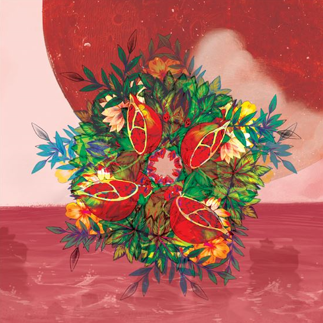
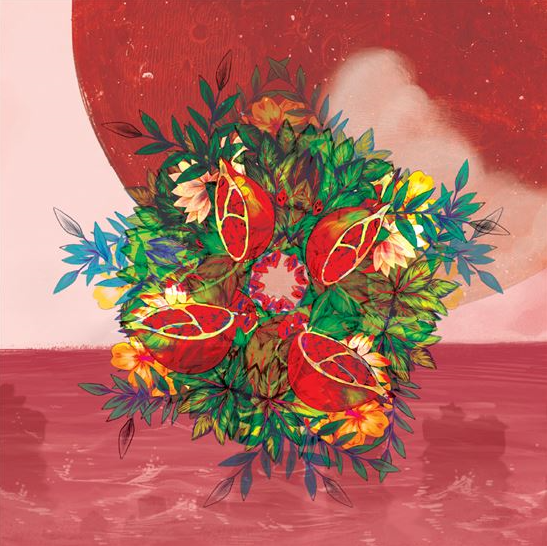

서울병 (Capital Disease)
본 작은 기묘하고도 위태롭고 애처로운 각종 병기(病期)에 관한 이야기다. 소통의 단절, 불안, 고립, 권태 등 스스로 좀 먹는 감정과의 싸움의 결과물이기도 하다. 하지만 무엇보다 가장 무서운 건 ‘행복하지도 불행하지도 않은, 아무 일도 일어나지 않는 상태’에 대한 두려움이다.

- 한낮
- 석류의 맛
- 어려운 달
- 장마전선
- 서울 (TITLE)
본 작은 기묘하고도 위태롭고 애처로운 각종 병기(病期)에 관한 이야기다. 소통의 단절, 불안, 고립, 권태 등 스스로 좀 먹는 감정과의 싸움의 결과물이기도 하다. 하지만 무엇보다 가장 무서운 건 ‘행복하지도 불행하지도 않은, 아무 일도 일어나지 않는 상태’에 대한 두려움이다.
